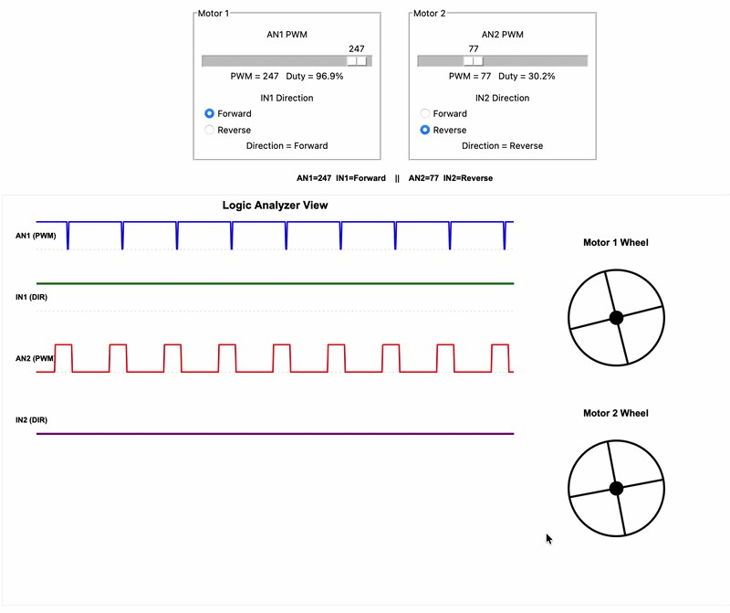

Senior Capstone
Pathfinding Autonomous Vehicle
Electrical architecture for an autonomous wheelchair-base robot: battery distribution, motor-driver integration, e-stop control, MATLAB analysis, and hardware bring-up.
My work
Electrical integration and bring-up.
- Role: electrical subsystem integration
- Focus: power distribution, motor control, e-stop wiring, validation
- Artifacts: wiring maps, MATLAB plots, motor-driver setup, project paper
I designed and integrated the electrical subsystems supporting vehicle mobility and control, including battery power distribution, motor-driver interfaces, emergency-stop circuitry, and communication paths between the Jetson compute platform, Teensy controller, and drive hardware.
MATLAB and Simulink were used to evaluate power-system behavior, motor-drive requirements, and subsystem interactions before implementation. These analyses were then validated against the physical platform through electrical testing, startup verification, and troubleshooting during system integration.
A significant portion of the project involved documenting electrical architecture, wiring, safety systems, and troubleshooting procedures to support future development, maintenance, and competition readiness.
Photos
Build and electrical context.


Electrical details
The pieces I documented for handoff.


